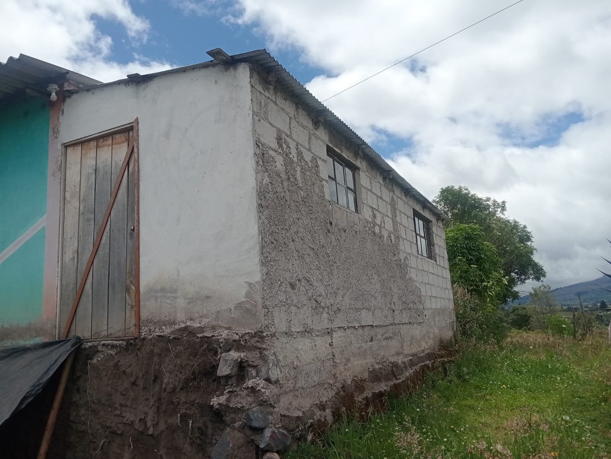
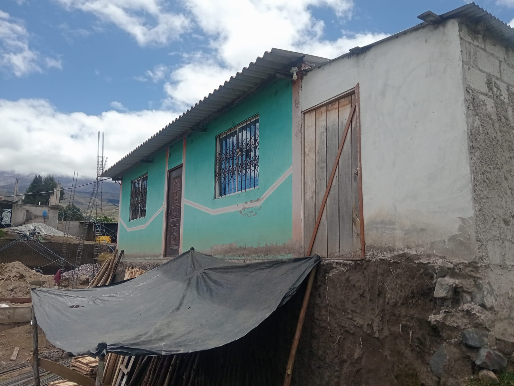
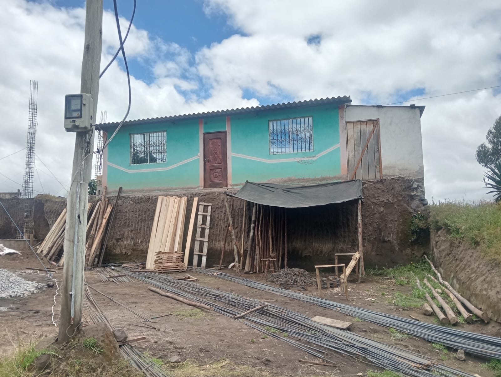
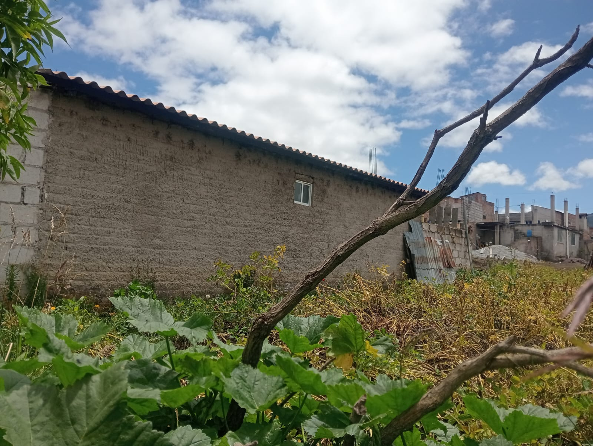

← volver al mapa
Casa - EC-RJ-155861
EC-RJ-155861 · casa · GUANO, Chimborazo
★ Oferta destacada




Datos del remate
| Avalúo pericial | $17,459 |
| Tipo de bien | casa |
| Área de construcción | 81.63 m² |
| Cantón / Provincia | GUANO, Chimborazo |
| Dirección / Sector | Parroquia SAN ANDRES Sector/Barrio ZANJA PAMBA |
| Señalamiento | Primer Señalamiento |
| Fecha de remate | 2026-10-05 |
| No. de proceso | 18334202306873 |
Análisis vs. mercado
| Avalúo por m² | $214/m² |
| Mediana de mercado en la zona | $603/m² |
| Descuento vs. mercado | 64.6% |
| Comparables usados | 8 |
| Radio de búsqueda | 2000 m |
| Puntaje | 92/100 |
Descripción completa del avalúo
características del bien inmuebleterreno forma regular y topografía desnivel construcciones si obras complementarias ; no referencia ubicación: la propiedad se ubica a 150 m del centro poblado comuna• estructura: de hormigon , cimientos, cadena, columnas • contrapiso : hormigón simple .• paredes: mampostería bloque enlucido y pintada • puerta principal: de hierro • cubierta: estructura metálica con eternit • ventanas de aluminio con vidrio claro 3 mm , con cubreventanas instalaciones eléctricas: medidor de luz eléctrica y empotradas• instalaciones sanitarias: medidor de agua potable y acometida sanitaria , empotradas• edad construcción: 8 años aproximadamente estado: regular 1 pisoarea construccion : 81.63 m2
Análisis de inversión (IA)
⚠ Dudosa — revisar bienEl descuento del 64.6% sobre la mediana de mercado parece muy atractivo, pero el avalúo pericial de $17,458.79 para 81.63 m² en Guano es un valor bajo que refleja limitaciones reales de la propiedad. La construcción con cubierta de eternit, estado regular y topografía en desnivel reduce su potencial de revalorización y puede implicar costos de mejora no triviales para un inmueble de este precio.
A favor:
- Descuento significativo del 64.6% sobre comparables de mercado, basado en 8 muestras (muestra razonable para la zona)
- Construcción relativamente joven: aproximadamente 8 años
- Servicios básicos disponibles: medidor de luz, agua potable y acometida sanitaria instalados
- Estructura de hormigón con cimientos, cadenas y columnas, lo que da solidez estructural básica
- Ubicación cercana al centro poblado (150 m), lo que facilita acceso a servicios
En contra:
- Avalúo pericial muy bajo ($17,458.79 para 81.63 m²), lo que sugiere que el mercado en Guano es deprimido o que la propiedad tiene limitantes serias de valor
- Estado de construcción calificado como 'regular', lo que implica deterioro o mantenimiento deficiente para solo 8 años de antigüedad
- Cubierta de eternit (fibrocemento con posible contenido de asbesto en versiones antiguas), lo que puede representar un pasivo de salud y reemplazo costoso
- Topografía en desnivel, lo que puede complicar ampliaciones, acceso vehicular y mantenimiento
- Sin obras complementarias (ningún porche, cerramiento, garaje u otro complemento reportado)
- Un solo piso y sin detalles de número de ambientes, lo que limita la evaluación funcional del inmueble
Riesgos a verificar:
- Estado 'regular' en construcción de solo 8 años es una señal de alerta: puede indicar problemas de humedad, grietas o mala ejecución original que no se detallan en el peritaje
- Cubierta de eternit: dependiendo del año de fabricación, puede contener asbesto; su reemplazo tiene costo significativo y riesgo regulatorio
- Topografía en desnivel no cuantificada: sin saber la pendiente exacta, es difícil estimar costos de adecuación o riesgo de inestabilidad
- El alto descuento (64.6%) en un remate judicial puede esconder cargas ocultas: hipotecas no canceladas, gravámenes, embargos adicionales o litigios pendientes sobre el bien — verificar certificado del Registro de la Propiedad y estado procesal del juicio
- No se menciona si hay ocupantes actuales en la propiedad; en remates judiciales en Ecuador la desocupación puede ser un proceso largo y costoso
- Mercado de Guano es pequeño y con baja liquidez: revender o arrendar este inmueble puede tomar tiempo considerable si el proyecto no funciona
Generado por IA a partir de la descripción — no es asesoría legal ni financiera.
Esta ficha es una copia de lo publicado en el sitio oficial de remates
judiciales de la Función Judicial del Ecuador, para consulta — no
reemplaza el expediente judicial. remates.funcionjudicial.gob.ec no da
un link propio por remate, por eso se generó esta página aparte.
Antes de ofertar, el expediente debe revisarlo un abogado.